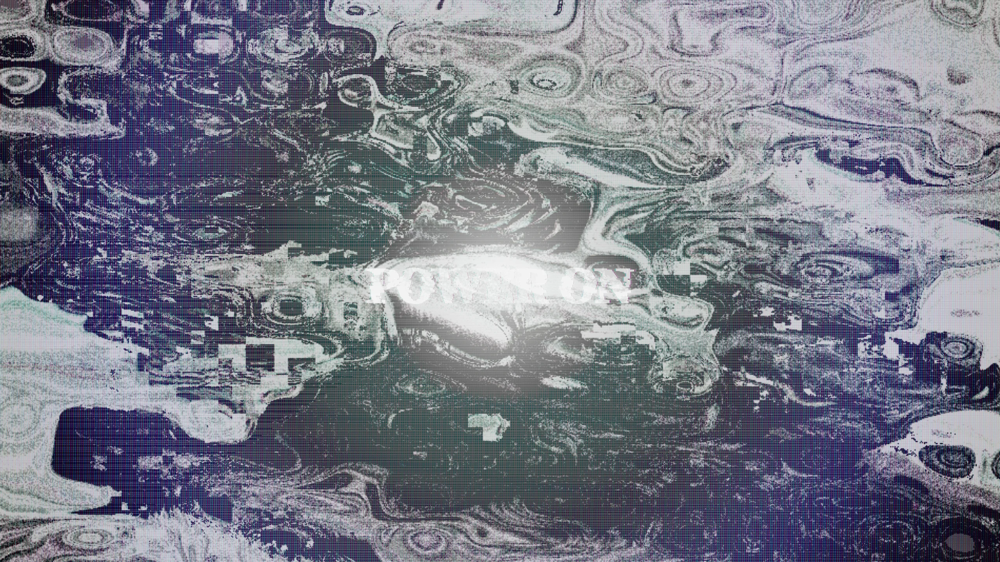
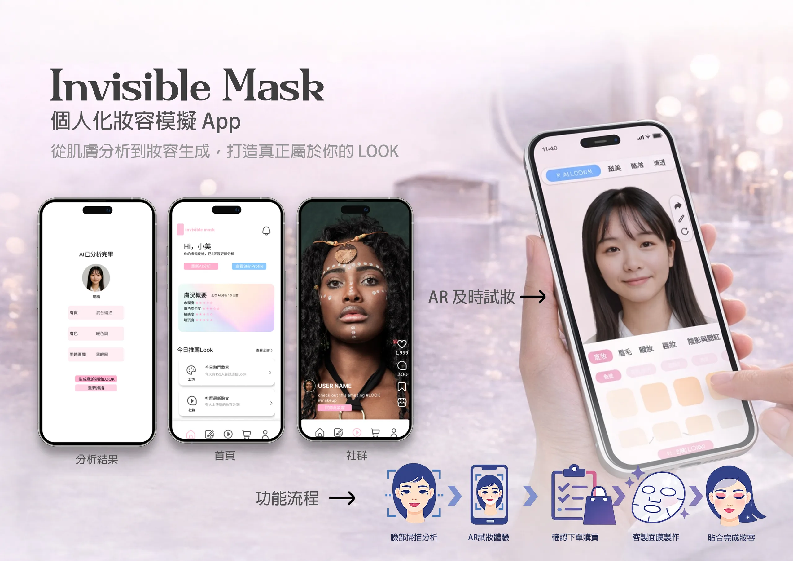
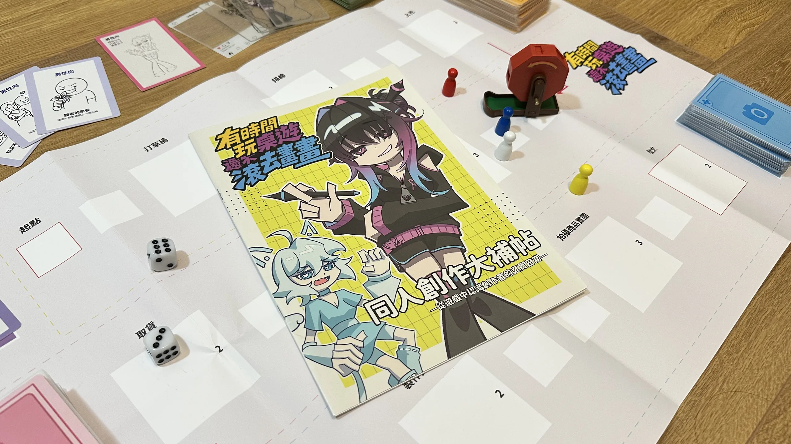
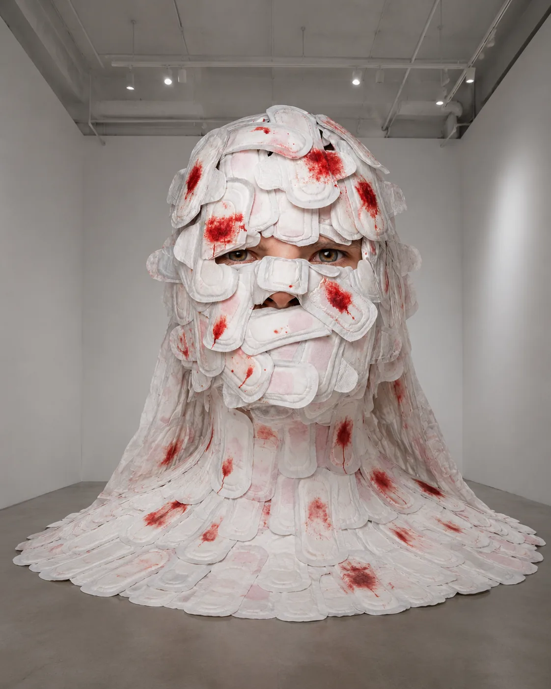

YUKICHOU
I don't believe things have to stay the way they are.
I start with how people feel and act, take familiar rules apart, then rebuild them through images, interaction, or play.

Listen & Speak
Two people speak through a screen while the system keeps distorting their messages. Understanding becomes something they must build together.
Ocean of Masks
Discarded masks become marine creatures. An everyday object left by the pandemic becomes another form of pollution.

Invisible Mask
A future technology that applies makeup instantly, designed from the needs and decisions of the people who might use it.

Doujin Booth Teaching Board Game
The chaos of a first doujin booth turned into a board game you can experience before doing it for real.

Blood Is Not a Sin
A monumental body made of sanitary pads. Visitors' words are translated and projected, replacing stigma one sentence at a time.